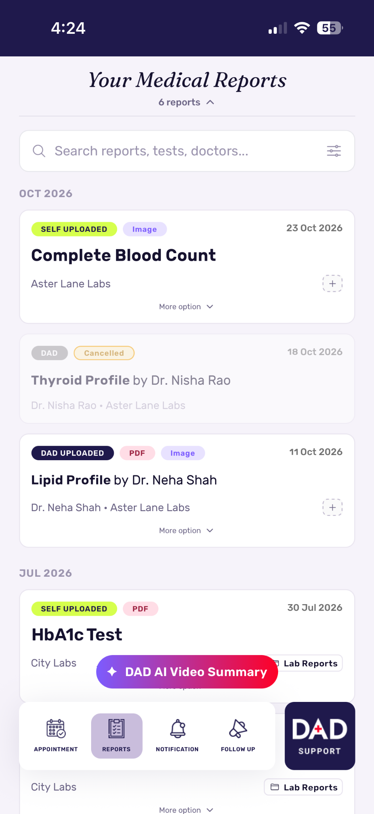
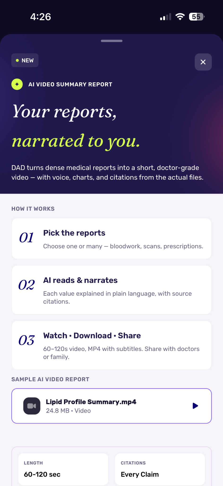
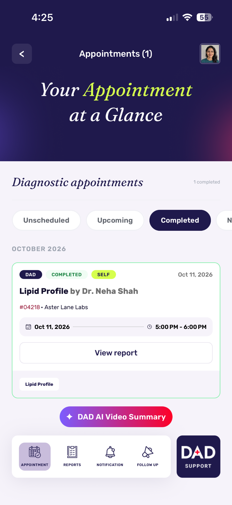

Upload, organize, and access your medical reports anytime and anywhere. DAD Report allows every
user to save, map, retrieve, and share their health history.
Your reports should be easy to find. Not lost in files and phones.
Why we built DAD Report
Medical reports are spread across phones, paper files, labs, and clinics. DAD Report keeps them in
one app, arranged by date, so you can find the right report when your doctor asks for it.
Why DAD Report
Reports are hard to manage. DAD Report makes it easier.
Common problems with medical reports, and how the app helps with each one.
The problem
Reports are scattered
Reports sit in paper files, phone photos, chats, and emails.
With DAD
Report
All your reports in one timeline
Upload PDFs or images. Let AI add them to your timeline by date.
The problem
Reports are hard to understand
Medical terms and test values can be difficult to read.
With DAD
Report
AI explains your reports
Read an AI summary, or get an AI video explanation.
The problem
One treatment, many reports
Reports for the same treatment are hard to keep together.
With DAD Report
A folder for each treatment
Create a folder for a treatment and keep its reports together.
The problem
Family reports get mixed up
It is hard to keep each family member's reports separate.
With DAD
Report
A profile for each family member
Add family members and switch profiles to see their reports.
The problem
Medical insurance is hard to read
It is hard to see what your policy covers and what it does not.
With DAD
Report
AI explains your policy
Upload your policy. AI explains its cover, exclusions, and costs.
The problem
Tests and follow-ups take effort
Booking tests, collecting reports, and following up take time.
With DAD
Report
Tests and follow-ups in the app
Schedule tests your doctor requests, and request a follow-up.
Features
What you can do with DAD Report.
Organize, understand, and share your medical reports in one app.
Organize 01
Keep your reports in order.
Upload and timeline
Upload PDFs or images. Let AI add them to your timeline.
Treatment folders
Create a folder for each treatment and keep its reports together.
Family profiles
Add family members and switch profiles to see their reports.
Understand 02
Know what your reports say.
AI summary
Read an AI summary of your reports in simple words.
AI video explanation
Select reports. Get an AI avatar video after processing.
Medical insurance policy
Upload your policy. AI explains its cover, exclusions, and costs.
Connect 03
Tests, doctors, and support.
Test requests
Schedule tests your doctor requests. Get the reports in the app.
Doctor follow-up
Choose a doctor, describe your problem, and send a follow-up request.
Contact support
Contact support if you need help using the app.
Inside the app
A look inside DAD Report.
Real screens from the DAD Report app.
Report timeline
All your reports, by date
Every report you upload, arranged by date.

AI video explanation
Your reports, explained by AI
Select reports and get a video explanation.

Diagnostic tests
Tests your doctor requests
Schedule the test, then view the report in the app.

How it works
Get started in four steps.
Create your profile, add your reports, and keep them organized.
01
Create your profile
Sign up and add family members if you manage their reports too.
Profile
02
Upload your reports
Upload PDFs or images of your medical reports from your phone.
Upload
03
Organize and understand
Add reports to treatment folders, or let AI add them to your timeline. Read an AI summary.
Organize
04
Share or follow up
Share the reports you choose, or send a follow-up request to a doctor.
Share
Follow-up requestSent to your chosen doctor
Doctor follow-up
Need a follow-up? Send a request.
Use PING to send a follow-up request to a doctor. The doctor can then contact you.
01Choose a location and doctor
02Describe your problem
03Send your follow-up request
PING is for follow-up only. It is not an OPD consultation or appointment booking.
DAD Report is the first app from Doctors At Door. The wider DAD platform aims to connect patients,
doctors, diagnostic centers, clinics, and hospitals. More services are planned for later versions.
Doctors At DoorPlatform
PatientsDoctorsDAD admin teamDiagnostic centers and labsClinics and hospitals
Pharmacy V2DAD Paramedic V2DAD AI Health Assistant V3DAD Marketplace V3Fitness and wellness V4Holistic healthcare V4DAD Healthcare Community V4
Solid: included in version 1 · Dashed: planned for later versions
Privacy and AI
Your reports, your choice.
Each profile keeps its own reports, and you choose which reports to share. Read how we protect
your data on our
data security page.
Separate profiles
Each family member's reports stay in their own profile. Switching profiles does not merge them.
You choose what to share
Share only the reports you select.
AI is not a doctor
AI summaries and videos help you understand your reports. They are not a diagnosis or treatment
advice.
DAD Report app
Your reports. On your phone.
Upload, organize, and understand your medical reports in one app.
DAD Report is an app that helps you organize, understand, and share your medical reports. It
is the first app from Doctors At Door.
You can upload medical reports as PDFs or images. Keep them in treatment folders, or let AI
add them to your timeline.
Yes. Add a family member to create their profile, then add and view their reports. Use Switch
profile to change whose reports you see. A family profile is not a separate account.
No. The AI summary helps you understand your reports. Diagnosis and treatment decisions stay
with your doctor.
It is a video about reports you select. An AI avatar, AI narration, and AI visuals explain the
information in those reports. Your video is ready after processing. The avatar is not a real
doctor.
Yes. Upload your medical insurance policy. AI explains what it covers, what it does not cover,
and the costs shown in it. The app does not sell insurance or approve claims.
Your doctor selects the tests and a diagnostic center. You receive a test request and choose a
date and time. After your test, the diagnostic center uploads your reports to the app.
A PING is a follow-up request. Choose a location and doctor, describe your problem, and send
the request. It is not an OPD consultation or appointment booking.